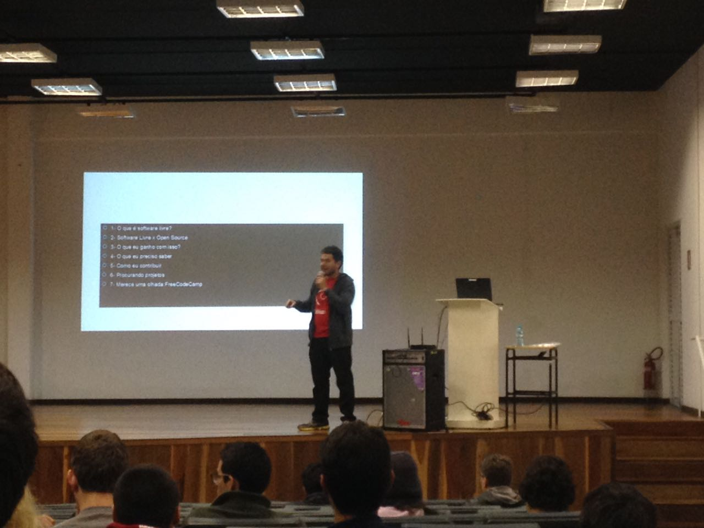

Palestra Contribuindo com Software Livre

Palestra
PalestraContribuindoComSoftware Livre.pdf
Diferença entre software livre e código aberto
Artigo explicando a diferença
Requisito para contribuir:
GIT (Necessário para entender versionamente de código)
git - guia prático (apenas comandos)- sem complicação!
Clonando projetos
Qual projeto escolher
Repostiórios mais acessados do GitHub hoje
Emulador de ps3
Jogando Hearthstone com teclado, usando auto hotkey
Projeto para substituir senhas por reconhecimento facial, do Cabelo (BR)
FreeCodeCamp -> Learn to Code and Help Nonprofits
Qualquer dúvida que não tenha sido esclarecida pode entrar em contato nas redes sociais neste
link